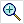
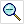
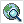
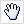
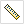
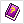
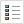
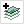

| Overzicht van de functies van de knoppen boven de kaart. | |
|---|---|
| Hiermee keer je terug naar de vorige kaartuitsnede. Klik op de knop om naar de vorige kaartuitsnede te gaan. | |
| Als je naar een eerdere kaartsnede bent terug gegaan, kan je hiermee weer naar de latere uitsnede terugkeren. Klik op de knop om naar de volgende kaartuitsnede terug te keren. | |
|  | Hiermee kan je op de kaart inzoomen. Klik op de knop om de functie te selecteren en klik dan op de kaart om in te zoomen. Het is ook mogelijk om een rechthoek te slepen op de kaart om op een specifiek gebied in te zoomen. |
|  | Hiermee kan je uitzoomen. Klik op de knop om de functie te selecteren en klik dan op de kaart om uit te zoomen. |
|  | Hiermee kan je naar de originele kaartuitsnede terug keren. Klik op de knop om de originele kaartuitsnede te krijgen. |
|  | Hiermee kan je de kaart verschuiven. Klik op de knop om de functie te selecteren en dan klik en sleep de kaart om hem te verschuiven. |
|  | Hiermee kan je een afstand op de kaart meten. Klik op de knop om de functie te selecteren en klik op de kaart om te beginnen. De cumulatieve afstand tussen alle volgende kliks op de kaart wordt weergegeven onder aan de kaart. Klik twee keer op de zelfde plek om de meting stop te zetten. |
|
|
Hiermee kan je van het huidige kaartbeeld ëën enkel plaatje maken. Dit kan je vervolgens printen of opslaan via de normale methoden van de browser. |
|  | Hiermee kan je deze help bekijken. Klik op de knop om deze help te krijgen. Sluit het help window om weer terug te keren naar de EduGIS site. |
|  | Hiermee kan je de lagenbeheer van de kaartlagen zichtbaar maken. Klik op de knop om de lagenbeheer zichtbaar te maken. Voor meer informatie zie ook legenda. |
| Hiermee kan je informatie over objecten in de kaart verkrijgen. Klik op de knop om de functie te selecteren en klik dan op een object op de kaart om informatie daar over te krijgen. Voor meer informatie zie ook informatie. | |
|
|
Hiermee kan je zoeken op adres of postcode. Klik op de knop om het zoekscherm zichtbaar te maken. Voor meer informatie zie ook zoekopdracht. |
| Hiermee kan je de markeringspunten verwijderen. Klik op de knop om alle markeringspunten te verwijderen, ook diegene die niet direct zichtbaar zijn. | |
|  | Hiermee kan je een laag toevoegen aan de kaart. Klik op de knop om het kaartlaag toevoegen scherm zichtbaar te maken. Voor meer informatie zie ook toevoegen kaartlaag. |
Naast de functies van de knoppen zijn er een aantal uitgebreidere functies in schermen aan de rechterkant van de kaart. Standaard staat daar de legenda, deze kan worden vervangen door informatie, zoekopdracht, resultaat of toevoegen kaartlaag. Hieronder staat een uitgebreidere beschrijving van deze verschillende schermen.
| Overzicht van de functies rechts van de kaart. | ||||||||||||
|---|---|---|---|---|---|---|---|---|---|---|---|---|
Legenda
|
||||||||||||
|
||||||||||||
Informatie
|
||||||||||||
| Bij gebruik van de informatie functie verschijnt hier per laag de beschikbare informatie. Echter niet alle lagen hebben informatie over elk punt op de kaart. Mocht er na gebruik van de informatie functie hier geen informatie verschijnen kan het zijn dat 1) er geen informatie beschikbaar is op dat punt of; probeer een ander punt, of 2) dat de zichtbare lagen helemaal geen informatie bevatten; voeg een laag toe die wel informatie bevat. | ||||||||||||
Zoekopdracht
|
||||||||||||
| Hiermee kan worden gezocht op straat, plaats, gemeente of postcode. Typ de zoekopdracht in de daarvoor bestemde velden en klik op 'zoek'. De gevonden resultaten zijn dan vervolgens zichtbaar in het resultaat scherm. Je kan kiezen om het resultaat te laten zien met een markeerpunt en eventueel om er op in te zoomen. Dit kan door de hokjes voor "Markeringspunt" en "Zoom in" aan te vinken. | ||||||||||||
Resultaat
|
||||||||||||
| Het resultaat van de zoekopdracht wordt hier weer gegeven. Het aantal resultaten op een zoekopdracht is maximaal 20. Bij 1 resultaat zal, mits dat is gekozen, op het resultaat worden ingezoomed en een markeringspunt worden getekend. Bij meerdere resultaten moet op een resultaat worden geklikt om het eventuele gewenste markeringspunt te tekenen en op het resultaat in te zoomen. | ||||||||||||
Toevoegen kaartlagen
|
||||||||||||
| Hiermee kan je een laag aan de kaart toevoegen. Selecteer eerst uit het lijstje een categorie. Vervolgens zal een lijst met beschikbare lagen verschijnen onder de lijst. Klik op een laag om hem toe te voegen. Het kan zijn dat een laag niet direct zichtbaar is, bijvoorbeeld omdat hij buiten de huidige kaartsnede valt of dat het alleen zichtbaar is bij een bepaald zoom niveau. Sluit het 'toevoegen kaartlagen' venster en controleer in het kaartlagen beheer of de laag is toegevoegd. |